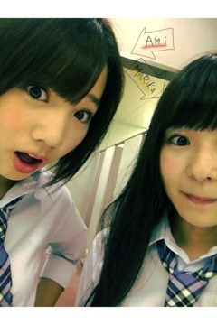

| 2012/07 14 Sat | 177回目*marika |
いつも読んでくださってる方、
初めて読んでくださった方、
コメントしてくださった方、
ありがとうございます！
まりかです。
全国握手会in大阪
おいシャン最後の全握。
終了しましたー‼
来てくださったみなさん、
本当にありがとうございました

ライブもめっちゃ盛り上がったね

さっっっっすが大阪

自己紹介のコール＆レスポンス
ありがとうございました‼
うんうん！ちゃんと聞こえた

これからもあの自己紹介に
していくのでまた
＼どうがーん／
て叫んでね笑
...
♪おいでシャンプー
♪狼に口笛を
♪ハウス！
♪乃木坂の詩
そして、幕張で初披露した
3rdシングル
♪走れ！Bicycle
みなさんとコールと私たちの歌が
すごい一体感があって...
距離が縮まったみたいで
嬉しく感じました♪
あー、ライブだなって思った！
コールとかMixって
テンション上がるねぇ
‼
もっと良いパフォーマンスが
できるようにもっともっと頑張るー‼
体力もつけなきゃ。
...
いやー大阪いいね♪
盛り上がった盛り上がった
私ちっちゃい頃は大阪に住んでたから
普段も関西弁出てしまうことあるけど
今日も自然と出てしまったなぁ

大阪は小2まで住んでたけど、
育ちは神奈川県だから
私は神奈川県出身なのです

わかりにくいかもしれないけど
そう覚えてください


みゅうみゅうが体調不良のため、
握手会のレーンは
あみと組むことになりました。
心配だったけど、
ライブですごい頑張ってた！
みゅうみゅう、ゆっくり休んでね><‼
また次同じレーンだったらいいな＊
沢山の方と握手できた
 ‼
‼
‼
あみあみ族の方とも！
昨日メンバーみんなでお好み焼き
食べに行ったんやけど...
あみがね、もう本当おもしろすぎて
みんなで笑ってたのよ

あのマヨビームはやばいわ笑
あみと一緒のレーンになったの
初だった！
めっちゃ楽しかったし

全握って、いいね

今日は本当に
ありがとうございました^^
口もにゅっと、
それでは明日も元気に頑張りまりかっ
まりか
コメント(173)
2012/07/14 23:54